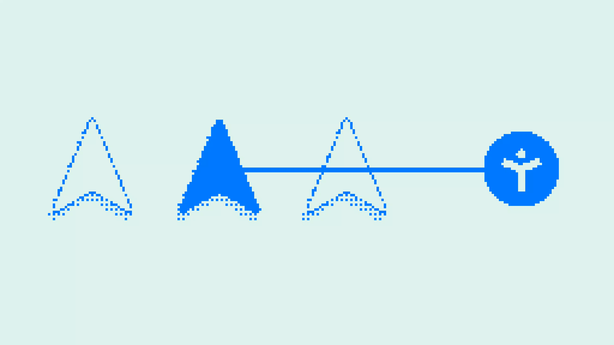
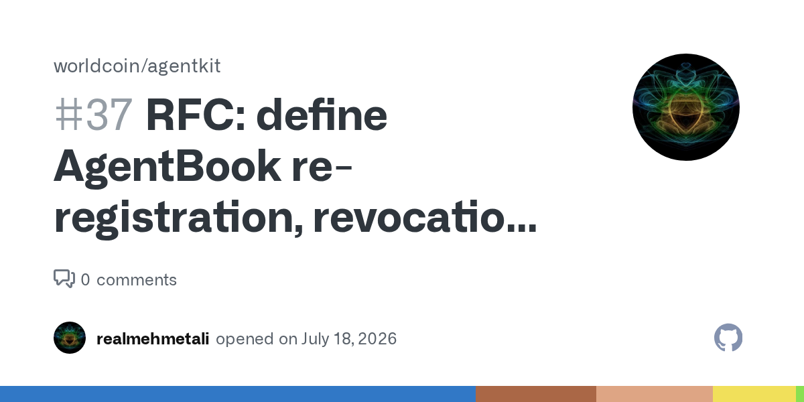
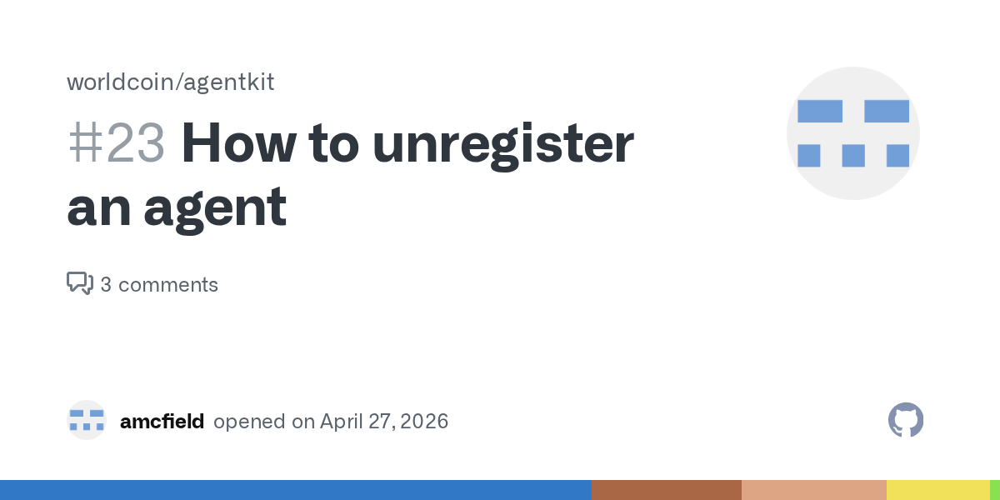
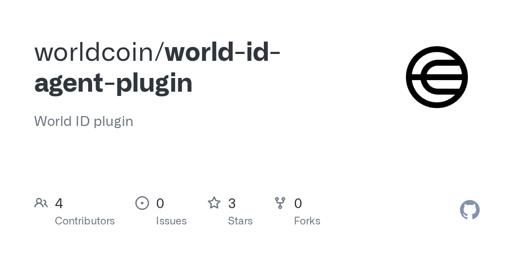
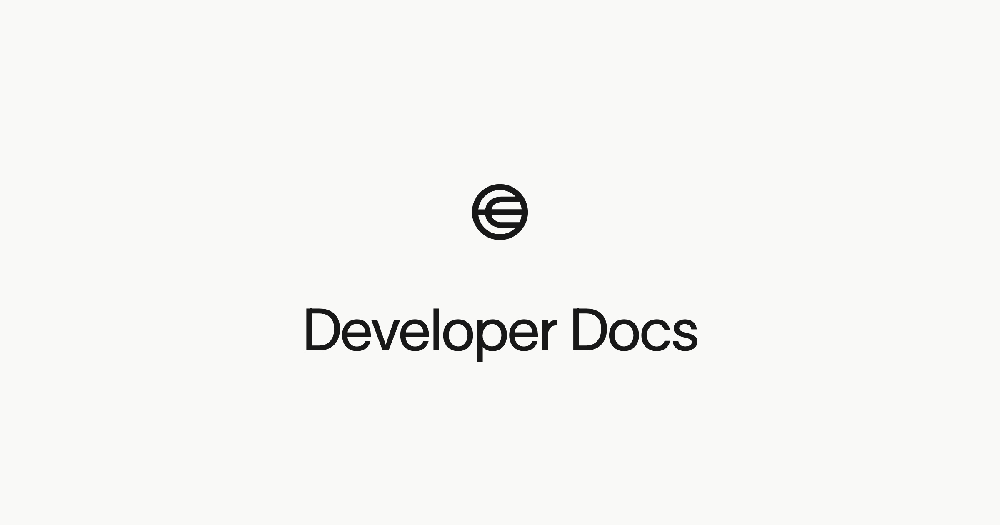

Review deck · cited sources · not the 4-minute talk
Visuals are the publishers’ own images: World’s CDN, World developer docs, and GitHub Open Graph cards. Each slide names the URL. No unlicensed Google Image scrape.
Source · World, 17 March 2026

world.org/blog/announcements/now-available-agentkit-proof-of-human-for-the-agentic-web · image hosted on world-cdn.worldcoin.org. The essay also describes free trials per unique human. Our slate kills free-trial as the win.
Sources · worldcoin/agentkit issues

github.com/worldcoin/agentkit/issues/37 · RFC: re-registration, revocation, and wallet rotation. Opened 18 July 2026. IAgentBook has no revocation operation.

github.com/worldcoin/agentkit/issues/23 · “How to unregister an agent.” Hosted flow returns ALREADY_REGISTERED. Still open.
Source · worldcoin/world-id-agent-plugin

github.com/worldcoin/world-id-agent-plugin · README: MCP base is https://sandbox.auth.world.org/mcp. Not staging. Not production.

docs.world.org/world-id/sandbox/what-is-sandbox · Sandbox World ID app, QR and deep link, proofs that are not production identities. Image: raw.githubusercontent.com/worldcoin/developer-docs docs-meta.png.
What we would implement · from the plugin README
developer-portal:manage registers the app. Callback must be HTTPS. Localhost is rejected.POST /rebind/live/start calls https://sandbox.auth.world.org/api/v1/device_authorization.POST /rebind/live/pull checks RS256, issuer, audience, and expiry on the ID token, then stores iss|sub.Discovery read live: sandbox.auth.world.org/.well-known/openid-configuration · device grant, token endpoint, JWKS, acr orb-v3, pairwise subject.
What we would not build · same sources
free-trial mode (x402 docs, and the 17 March essay) is a hard no. We do not sell “five free requests.”x402 guide: github.com/worldcoin/agentkit/blob/main/x402/DOCS.md · HITL: docs.world.org/agents/human-in-the-loop/integrate
Source list
1. World, “Now available: AgentKit,” 17 March 2026. world.org/blog/announcements/now-available-agentkit-proof-of-human-for-the-agentic-web
2. worldcoin/agentkit#37, opened 18 July 2026. github.com/worldcoin/agentkit/issues/37
3. worldcoin/agentkit#23, opened 27 April 2026. github.com/worldcoin/agentkit/issues/23
4. worldcoin/world-id-agent-plugin README. github.com/worldcoin/world-id-agent-plugin
5. World ID sandbox. docs.world.org/world-id/sandbox/what-is-sandbox
6. Sandbox IdP discovery. sandbox.auth.world.org/.well-known/openid-configuration
7. AgentKit x402 guide. github.com/worldcoin/agentkit/blob/main/x402/DOCS.md